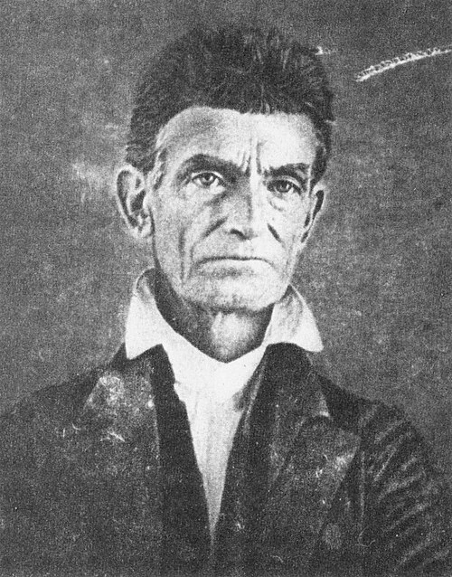

Bleeding Kansas
Before Harpers Ferry, John Brown became nationally known in Kansas, where proslavery and antislavery settlers were already fighting over the territory's future. The violence there convinced Brown that the struggle over slavery was moving beyond speeches and elections.
 Kansas became a preview of the Civil War: Americans were already fighting and killing one another over slavery years before Fort Sumter.
Kansas became a preview of the Civil War: Americans were already fighting and killing one another over slavery years before Fort Sumter.Why Kansas Exploded
The Kansas-Nebraska Act of 1854 overturned the old expectation that slavery would be barred from much of this western territory. Instead, Congress used popular sovereignty, meaning the settlers themselves would vote on whether slavery would be legal.
That made control of Kansas extremely important. Antislavery settlers moved there hoping to create a free state, while proslavery settlers wanted slavery to expand westward. Armed men from neighboring Missouri—often called Border Ruffians—crossed the border to influence elections and intimidate opponents. Kansas soon had rival governments, disputed elections, armed militias, and outbreaks of political violence.
Brown traveled to Kansas in 1855 to join several of his sons, who were already part of the free-state movement. He brought weapons with him. By the spring of 1856, Brown no longer saw Kansas as simply a political contest; he saw it as an armed struggle over whether slavery would continue to spread.
How the Violence Escalated

The Pottawatomie Problem

Brown believed the attack on Lawrence proved that proslavery forces would continue using intimidation and violence unless antislavery settlers showed that they could strike back. Three nights later, he led a small party—including several of his sons—to settlements along Pottawatomie Creek.
The group took five proslavery men from their homes and killed them with broadswords. The victims had not been killed in battle and had not taken part in the Sack of Lawrence. Brown's exact physical role in each death has long been debated, but he led the party and later defended the action as part of the struggle against slavery.
The killings shocked people on both sides. Supporters argued that Brown was answering a larger campaign of threats and violence against free-state settlers. Critics—including some people who opposed slavery—called the killings murder. Pottawatomie therefore became one of the strongest pieces of evidence used both by Brown's defenders and by those who saw him as a dangerous extremist.
This is one reason Brown's legacy cannot be reduced to a simple hero-or-villain story.

Does fighting for a just cause make every method used in that fight just?